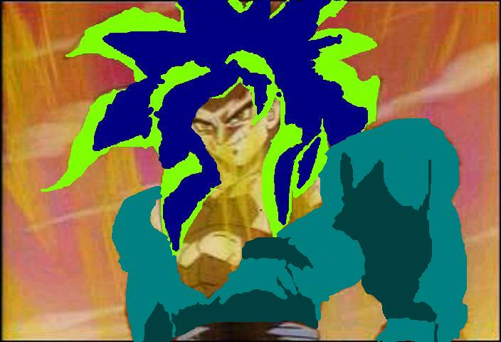

Goten

Name: Goten Son
Age: 21
Race: half human/half saiyan
Alignment: depends on mood
Siblings: Gohan
Marital Status: Dateing Bunny
Children: Bunny, Goten Jr. ((won a trophe!)), Chi
Moves: Kamehameha, Instant Transmission, Fusion Dance, Spirit Bomb, Prism of 7, prism of seven storm of tourment, Shot Gun, Ki of Thunder, Age Change, samurai blade, Fallen Wings, kaiouken, Break Up Teleport
Transformations: SSJ1, USSJ/SSJ2, oozaru, golden oozaru, Ssj4, SSJ5, SSJ6, Ancient Saiyan, SSJ7, SSJ8
Level: 862,950
Money: 100,000,100,000
Items: Nimbus, Power Pole, Regular Sword, Zed Sword, Wings of Death, janemba sword, Farie sword, Beam sword
Trophes: 1
Extra Info: Second son of Goku and Chichi.As a small boy he looked up to his older brother Gohan.He lost to Trunks and the Jr. World Martial Arts Tournament.He and Trunks dressed up as Mighty Mask to compeat in the Adult section of it.18 unmasked them and they fleed.They follwed the adults.Only to be knocked out by Vegeta.Piccolo brought them to Kami's look out to be trained by Goten's father Goku.He taught them the fusion dance.Before he finished Majin Buu was causeing trouble so he went to fight him.When he came back he showed them the super saiyan 3.He had to leave for After World.Piccolo finished training them.When they first tried the fusion dance.They messed up and made Fat Gotenks,then Skin Gotenks.They finally got it right and they went off to fight Majin Buu.They lost,and were punished.They did the fusion dance as super saiyans and waited for Piccolo to find them.When Majin Buu reappeared,he was more muscular and skinier.They trained in the Room of Time and Spirit.Majin Buu almost had them beat,until Piccolo destroyed the door,and after a few Super Ghost Kamikaze Attacks.Buu was able to escape.They followed after they went super saiyan 3.They almost beat Majin buu but the fusion wore off.Goten cheered his brother Gohan on while they waited for the hour to pass before refuseing.They refused and Majin Buu then absorbed Piccolo,then them.Goku and Vegeta fused into Veggeto,after Buu had absorbed Gohan.Veggeto was soon absorbed too.They lucky escaped.Earth was destroied and Goten,Gohan,Trunks were killed.Goten's father and Vegeta battled Buu in After World.His father started a Spirt Bomb that finished Buu! Five years later when hes 18.Bebi comes to earth and takes over his and everyone elses body.Bebi is finally defeated yet again by Goten's father Goku.Unknown to them in H.F.I.L Dr.Myu and Dr.Gero made a new 17,the two 17's fused makeing Super 17.Goten and the gang tried stoping him but failed.Goku yet again this time Chibi beat Super 17.They tried wishing everything back,but the dragonballs were cracked.The evil Shenlongs were defeated with Goku going super saiyan 4 and Vegeta learning the super saiyan 4.Goku and Vegeta finally defeated the final Shenlong,after trying the fusion dance.The real Shenlong told Goku that the dragonballs could no long be used.Goten said good bye to his father as he got onto the dragons back.The next month he meet a girl named Ayan Seung.They fell in love.She died a few mounths into her pregnace. On the day he was given the Z sword his friend Death reminded him of his exgirlfriend Bunny who was pregnat with triplets.Later that day he killed himself with the sword.The next day King Kai let him go to Earth and be there when Bunny gives birth to the triplets.There was two girls and one boy all with there tails attached.Bunny died after giveing birth to there son.He named one of the girls Bunny after the kids mother,Goten named his son after him,Goten Jr.,and his other daughter after his mother,Chi.Gotens friend Death is helping him raise the kids.Later that day around the same time King Kai and King Yemma let Goten go back to Earth early,Death brought back Bunny.Goten talked to Bunny again,he left lil Bunny with her.Then went to see Dai Kai to get his tail pulled out.He wanted to get his tail pulled out to show his kids where they got there tails from.Goten took Goten Jr. and Chi home and put them in there cribs then went out to look at the night...bad idea.When he saw the lake he also saw a reflection of the full moon.He transformed into the Oozaru.He was able to walk into the lake where he was under the full moon.His fur turned Golden.He headed for the mountains and stood on a ledge under the full moon.He forced himself human again but,he got fur on his chest and arms,bigger muscles,taller,baggy pants,and boots.He walked down to the lake and looked at himself in the lake.He was surprised.He went to see King Kai and told him the story.Goten gave up fighting for Bunny and the kids,and he and Bunny are happy to be together again.Bunny left Goten soon after.Goten changed his age to 8 then met Belldandy and change his age to 21 to be with her.He hasnt been happier since.
AIM: LilAnnoyingGoten, AnnoyingGotenSon, brokensoulgoten
Other rp char: Yusuke